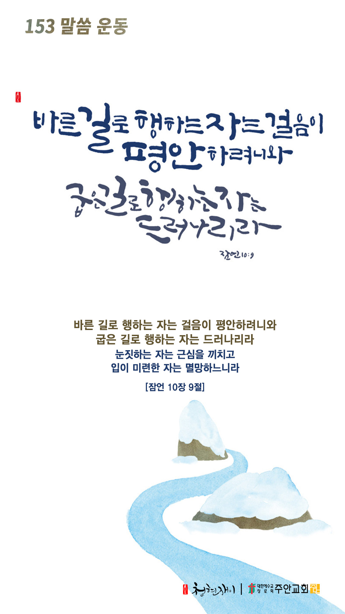

온라인 기도실 안내
2020년 10월25일(일)~10월31일(토)
- 온라인 기도실은 온 회중이 함께 하나님께 나아가는 자리입니다
- 30분 정도 여유를 갖고 하시길 바랍니다
- 말씀과 묵상, 찬양과 기도로 함께 합니다
- 배경 음악이 나올 수 있습니다 볼륨을 조절해주세요
준비가 되셨으면 아래의 버튼을 눌러주세요
찬양, 주의 성실을 찬양하리이다
(시71:22)
- 가사를 묵상하며 읽습니다
내 주의 은혜 강가로 저 십자가의 강가로
내 주의 사랑 있는 곳 내 주의 강가로
내 주의 은혜 강가로 저 십자가의 강가로
내 주의 사랑 있는 곳 내 주의 강가로
갈한 나의 영혼을 생수로 가득 채우소서
피곤한 내 영혼 위에
내 주의 은혜 강가로 저 십자가의 강가로
내 주의 사랑 있는 곳 내 주의 강가로
찬양, 주의 성실을 찬양하리이다
(시71:22)
내 주의 강가로 by 김정석
위의 찬양이 끝나면 말씀읽기를 눌러주시면 됩니다
말씀하옵소서, 주의 종이 듣겠나이다
(삼상3:10)
오늘의 말씀입니다
음악 소리가 크면 조절하시기 바랍니다

마음의 묵상
(잠10:9)
“바른 길로 행하는 자는 걸음이 평안하려니와 굽은 길로 행하는 자는 드러나리라”
1. 평안히 걷고 계신가요?
2. 굽은 길로 행하는 자는 어떻게 된다고 말씀하시나요?
3. 바른 길과 굽은 길 중 어느 길로 가시렵니까?
굽은 길에서 돌아서게 하소서
회개, 삶의 방향을 바꾸는 결정
회개함 없이 주님 앞에 설 수 없습니다
주님의 인애와 긍휼을 의지합니다
“다만 가슴을 치며 이르되 하나님이여 불쌍히 여기소서 나는 죄인이로소이다”
- 누가복음 18장13절 -
3분 정도 회개하며 주님 앞에 나아갑니다
네 길을 여호와께 맡기라
- 다음의 시편을 소리내어 읽습니다
악을 행하는 자들 때문에 불평하지 말며
불의를 행하는 자들을 시기하지 말지어다
그들은 풀과 같이 속히 베임을 당할 것이며
푸른 채소 같이 쇠잔할 것임이로다
여호와를 의뢰하고 선을 행하라
땅에 머무는 동안 그의 성실을 먹을 거리로 삼을지어다 또
여호와를 기뻐하라
그가 네 마음의 소원을 네게 이루어 주시리로다
네 길을 여호와께 맡기라
그를 의지하면 그가 이루시고 네 의를 빛 같이 나타내시며 네 공의를 정오의 빛 같이 하시리로다
- 시편 37장 1-6절 -
하나님 나라
1. 하나님의 나라가 속히 이 땅에 임하게 하소서
하나님 아버지, 유럽과 미국에 코로나 2차 대유행이 현실화되고 많은 사람들이 죽어가고 있사오니,
우리를 불쌍히 여기사 치료제와 백신을 속히 허락하시고,
온 인류가 창조주 하나님께 겸손히 회개하며 하나님의 도우심을 구하게 하소서.
간절한 마음으로 3분 정도 기도합시다
남과 북
2. 남북한이 속히 복음으로 통일되게 하소서
하나님 아버지, 북한정권이 핵무기와 모든 전쟁 무기를 내려놓고, 한반도의 평화를 위한 대화에 나오게 하시고,
복음의 능력이 북한 땅에 속히 임하여 신앙의 자유와 참 해방이 일어나게 하소서.
간절한 마음으로 3분 정도 기도합시다
대한민국
3. 우리나라가 하나님을 경외하는 나라가 되게 하소서
하나님 아버지, 코로나19로 인한 피해와 독감백신의 오염으로 인한 트윈데믹(코로나와 독감의 동시 대유행)이 일어나지 않도록 막아주시고,
정부와 질병본부가 지혜롭게 잘 대처할 수 있도록 도우소서.
간절한 마음으로 3분 정도 기도합시다
한국교회
4. 한국교회가 성령으로 새롭게 부흥되게 하소서
하나님 아버지, 한국교회가 코로나로 인하여 위기에 놓여 있으나 “온라인 병행”과 “구조조정” 그리고
“소그룹 강화”를 통하여 이 위기를 잘 극복하게 하시고,
더 나아가 성령의 도우심으로 진정한 부흥을 이루게 하소서.
간절한 마음으로 3분 정도 기도합시다
주안교회
5. 주안교회가 선교적 삶으로 세상을 섬기고 치유하게 하소서
하나님 아버지, 주안의 성도들이 우리를 결코 포기하지 않으시고 사랑과 은혜를 베푸시며,
마침내 우리의 갈 길을 인도하시는 하나님의 섭리의 손길을 믿는 믿음으로 살게 하시고,
받은 사랑과 은혜를 나누고 전하는 복의 뿌리들이 되게 하소서.
간절한 마음으로 3분 정도 기도합시다
감사의 기도
- 오늘 기도를 인도하신 주님께 감사를 올려드립니다
- 아래의 구절을 읽고 주님께 감사의 마음을 올려드립시다
“여호와를 찬송함이여 내 간구하는 소리를 들으심이로다”
- 시편 28장 6절 -
고요한 가운데 잠시 침묵하시기 바랍니다
파송, 세상을 향하여
- 오늘의 온라인 기도를 마쳤습니다
기도를 들으신 주님께서 평안히 가라 하십니다
주님께서 우리와 함께 하시니 두려울 것이 없습니다
새벽을 깨우며
- 새벽기도회 안내입니다